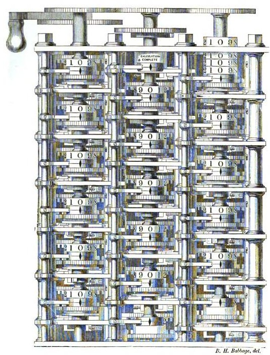
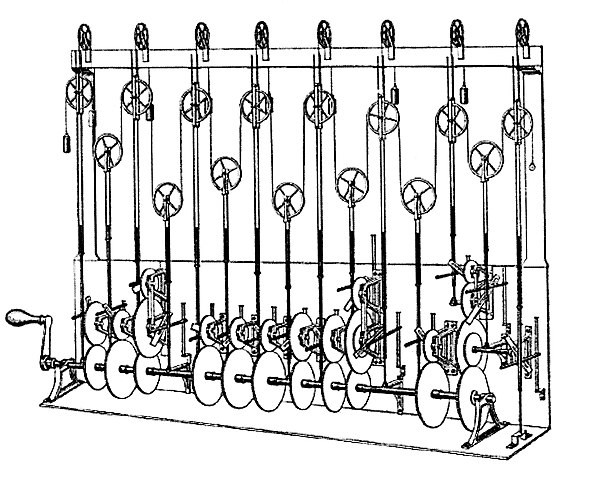
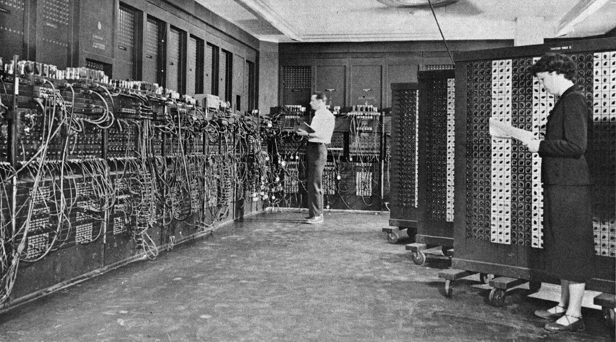
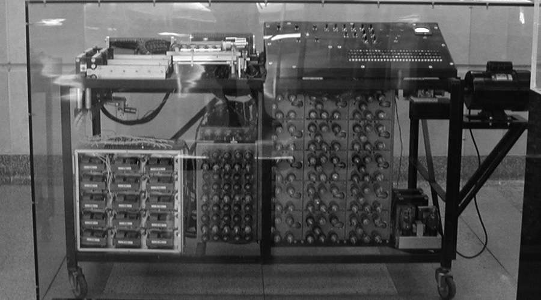

بسم الله الرحمن الرحيم
Bismillahir Rahmanir Rahim

Charles Babbage, an English mechanical engineer and polymath, originated the concept of a programmable computer which name was difference engine. He is considered as a father of computer. He conceptualized and invented the first mechanical computer in the early 19th century. After working on his revolutionary difference engine, designed to aid in navigational calculations, in 1833 he realized that a much more general design, an Analytical Engine, was possible. The input of programs and data was to be provided to the machine via punched cards, a method being used at the time to direct mechanical looms such as the Jacquard loom. For output, the machine would have a printer, a curve plotter and a bell. The machine would also be able to punch numbers onto cards to be read in later. The Engine incorporated an arithmetic logic unit, control flow in the form of conditional branching and loops, and integrated memory, making it the first design for a general-purpose computer that could be described in modern terms as Turing-complete.
The machine was about a century ahead of its time. All the parts for his machine had to be made by hand – this was a major problem for a device with thousands of parts. Eventually, the project was dissolved with the decision of the British Government to cease funding. Babbage's failure to complete the analytical engine can be chiefly attributed to political and financial difficulties as well as his desire to develop an increasingly sophisticated computer and to move ahead faster than anyone else could follow. Nevertheless, his son, Henry Babbage, completed a simplified version of the analytical engine's computing unit (the mill) in 1888. He gave a successful demonstration of its use in computing tables in 1906.

During the first half of the 20th century, many scientific computing needs were met by increasingly sophisticated analog computers which used a direct mechanical or electrical model of the problem as a basis for computation. However, these were not programmable and generally lacked the versatility and accuracy of modern digital computers. The first modern analog computer was a tide-predicting machine, invented by Sir William Thomson in 1872. The differential analyser, a mechanical analog computer designed to solve differential equations by integration using wheel-and-disc mechanisms, was conceptualized in 1876 by James Thomson, the brother of the more famous Lord Kelvin.
The art of mechanical analog computing reached its zenith with the differential analyzer, built by H. L. Hazen and Vannevar Bush at MIT starting in 1927. This built on the mechanical integrators of James Thomson and the torque amplifiers invented by H. W. Nieman. A dozen of these devices were built before their obsolescence became obvious. By the 1950s, the success of digital electronic computers had spelled the end for most analog computing machines, but analog computers remained in use during the 1950s in some specialized applications such as education (control systems) and aircraft (slide rule).
 
The principle of the modern computer was first described by computer scientist Alan Turing, who set out the idea in his seminal 1936 paper, On Computable Numbers. Turing reformulated Kurt Gödel's 1931 results on the limits of proof and computation, replacing Gödel's universal arithmetic-based formal language with the formal and simple hypothetical devices that became known as Turing machines. He proved that some such machine would be capable of performing any conceivable mathematical computation if it were representable as an algorithm. He went on to prove that there was no solution to the Entscheidungsproblem by first showing that the halting problem for Turing machines is undecidable: in general, it is not possible to decide algorithmically whether a given Turing machine will ever halt. He also introduced the notion of a 'Universal Machine' (now known as a Universal Turing machine), with the idea that such a machine could perform the tasks of any other machine, or in other words, it is provably capable of computing anything that is computable by executing a program stored on tape, allowing the machine to be programmable. Von Neumann acknowledged that the central concept of the modern computer was due to this paper. Turing machines are to this day a central object of study in theory of computation. Except for the limitations imposed by their finite memory stores, modern computers are said to be Turing-complete, which is to say, they have algorithm execution capability equivalent to a universal Turing machine. Purely electronic circuit elements soon replaced their mechanical and electromechanical equivalents, at the same time that digital calculation replaced analog. Machines such as the Z3, the Atanasoff–Berry Computer, the Colossus computers, and the ENIAC were built by hand, using circuits containing relays or valves (vacuum tubes), and often used punched cards or punched paper tape for input and as the main (non-volatile) storage medium.